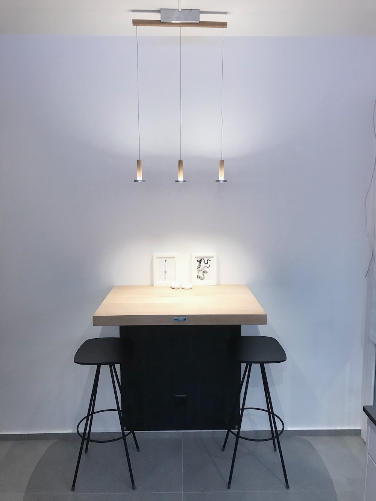
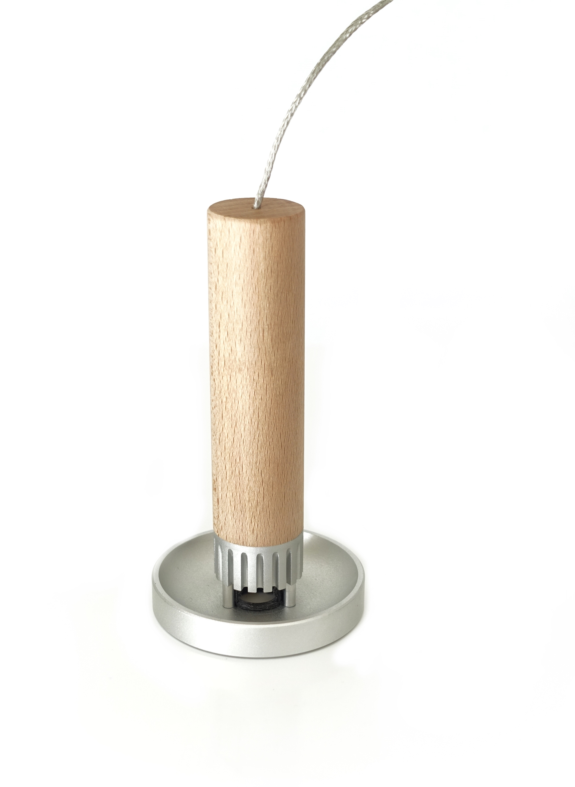
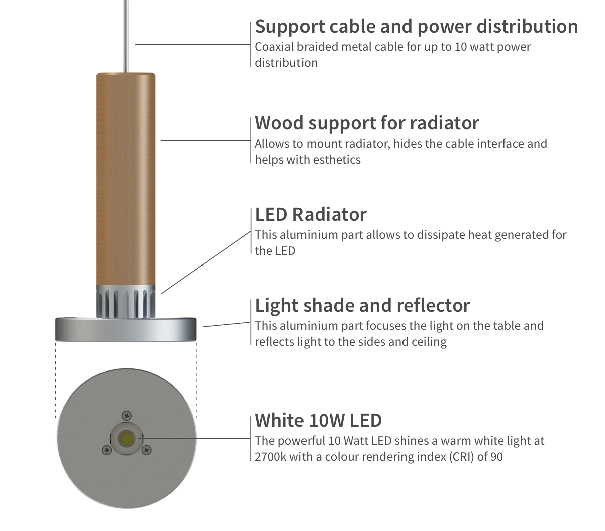
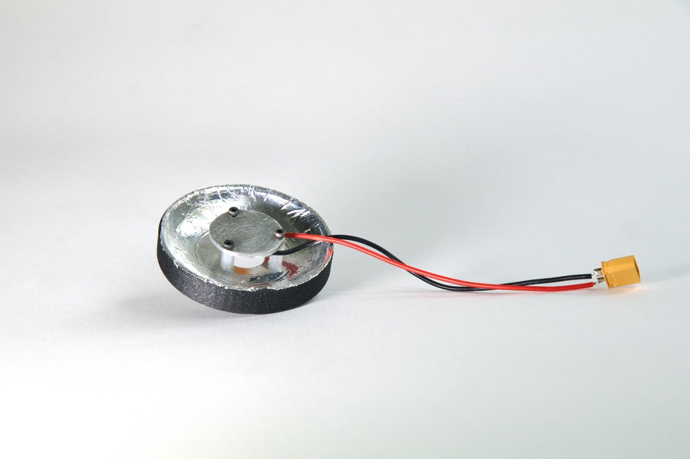
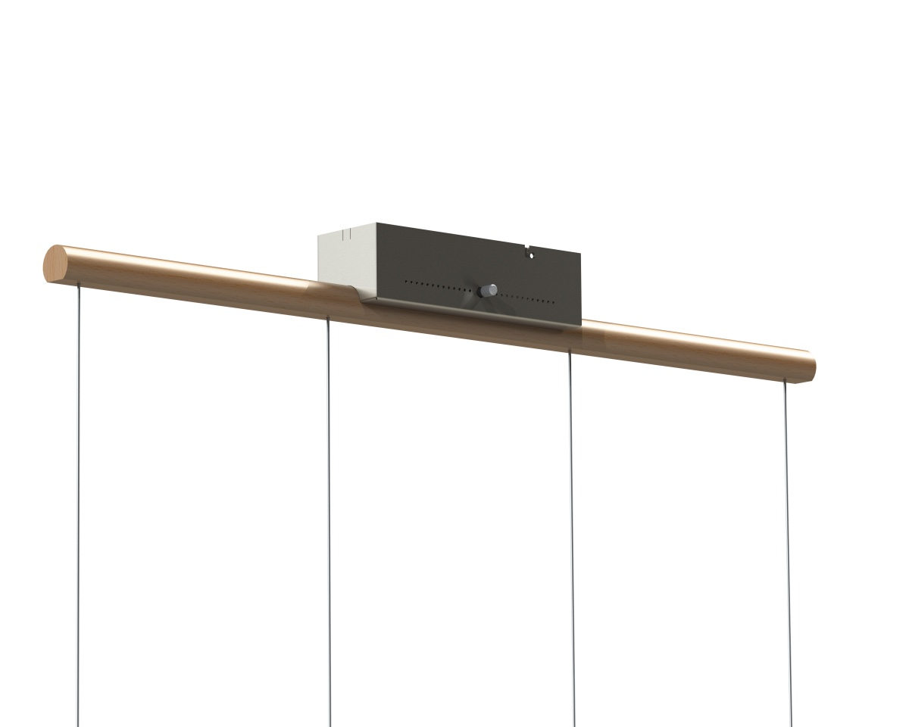

Drops - Modular Dining Pendant Lamp
The concept for drops came while thinking about a modular version of Photon, my other pendant lamp. Here is the result:
Each "droplet" consists of a module that supports an LED. Similarly to Photon, the light can shine directly onto the table surface but is also reflected to the ceiling by the reflector beneath the LED. The reflector prevents light from directly shining into people's eyes. Here is what a module looks like:
The LED is mounted on an aluminum support that also pulls heat away from the LED and into the fins and the reflector.
The LEDs are from Cree with a CRI of 90+ at 2700k temperature. That is some of the best stuff I could find and they look great.
Just for fun, here is an early prototype of a droplet module:
And a rendered view of the housing:
